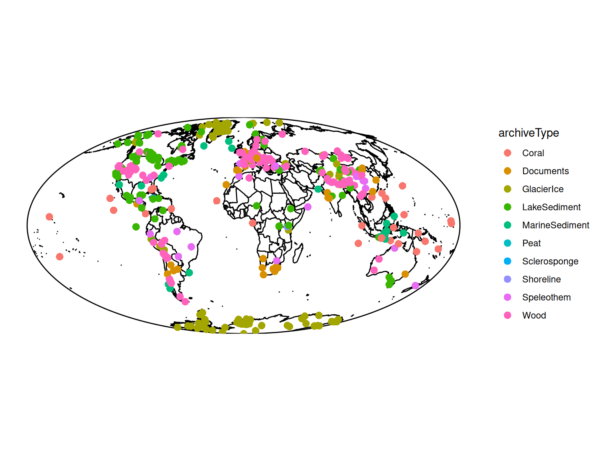
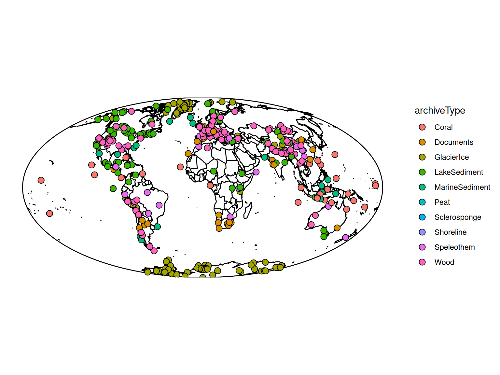
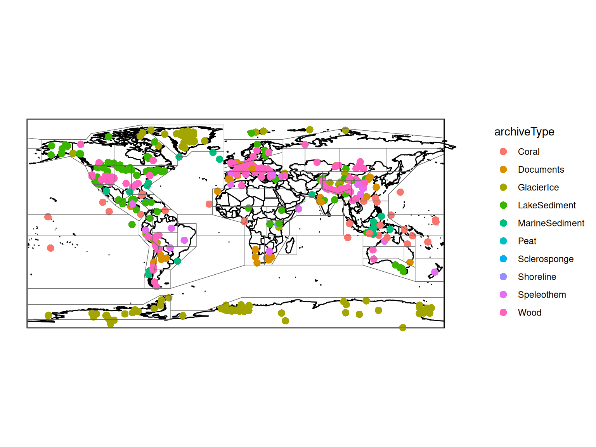
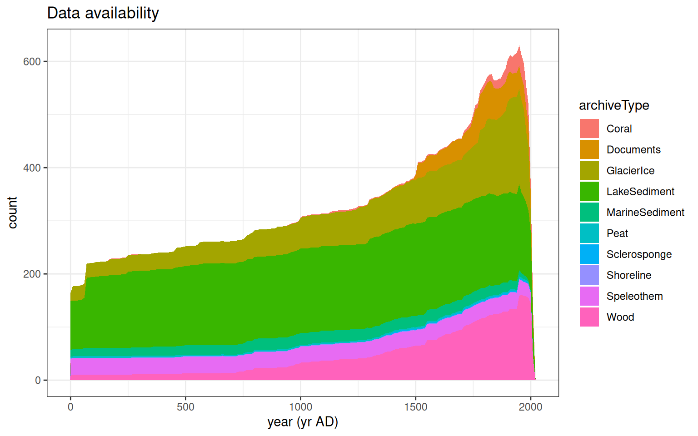
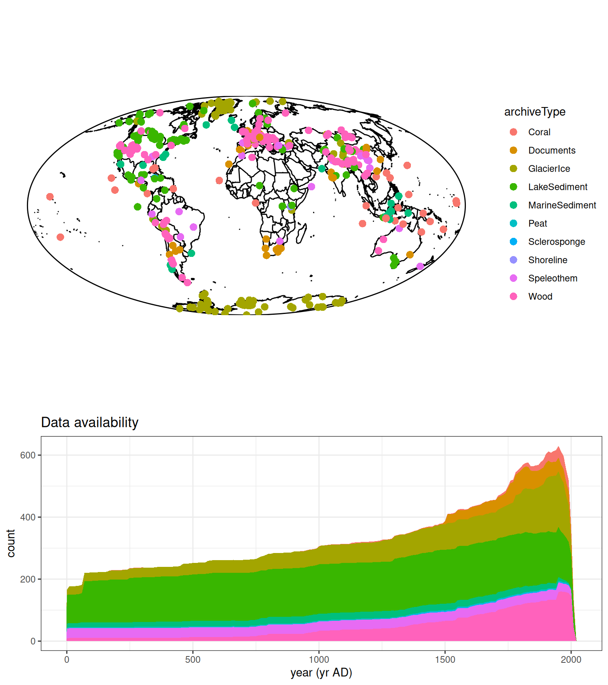
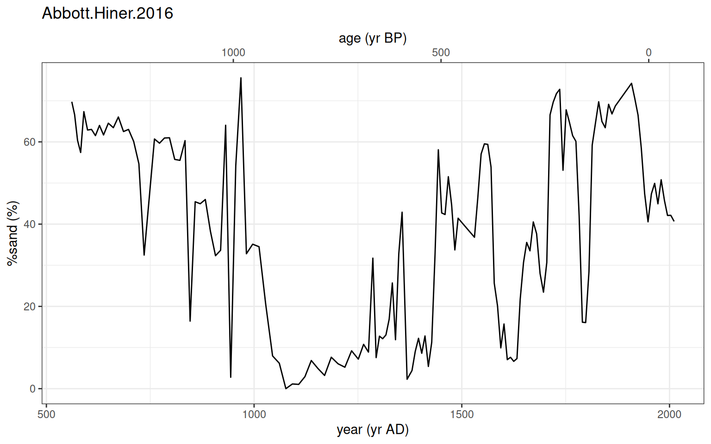
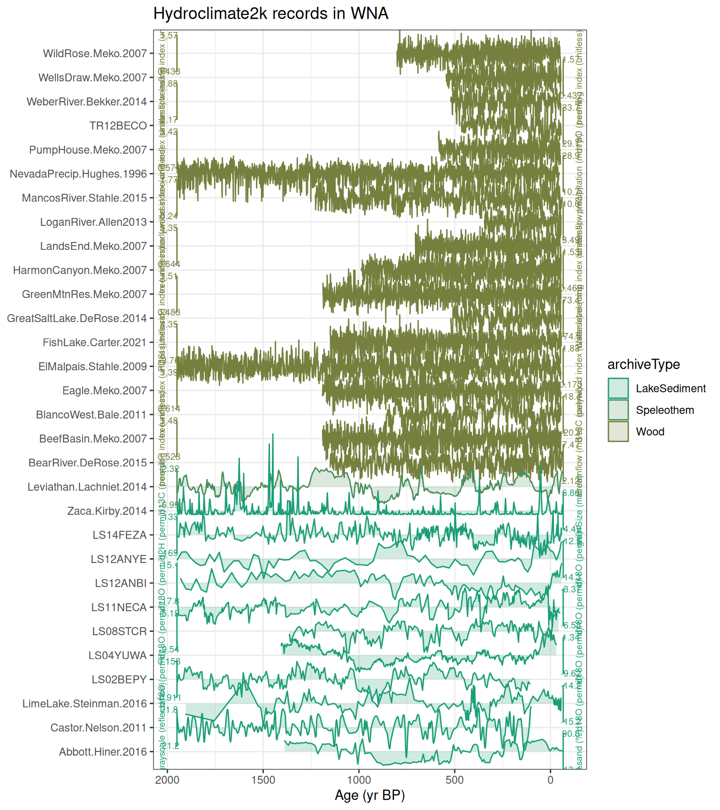

library(lipdR) # read, extract and filter LiPD data
library(lipdViz) # maps and plots
library(dplyr)
library(ggplot2)
source(here::here("R/helpers.R"))
checkVersions()1. Loading, exploring, plotting and mapping
lipdR and lipdViz
This tutorial reads the Hydroclimate2k compilation into R, narrows it down to the records in the compilation, finds which IPCC AR6 region each record is in, and makes maps and timeseries plots. The later tutorials build on these steps.
Packages and helpers
R/helpers.R holds a few small functions shared by all the tutorials. checkVersions() stops with a message if any of the LiPD packages is too old.
Read the compilation
The compilation is distributed as a zip file of LiPD files (one per dataset) on lipdverse.org. You can read it straight from the web:
options(timeout = 1800) # it's about 280 MB, so allow more than R's default 60 s
D <- readLipd("https://lipdverse.org/export/downloads/hydroclimate2k/0_9_0/hydroclimate2k0_9_0.zip")or from a copy you have downloaded. readLipd() can’t open a local zip file, so unzip it first and read the folder of .lpd files:
unzip("data/hydroclimate2k0_9_0.zip", exdir = "data/hydroclimate2k0_9_0")
D <- readLipd("data/hydroclimate2k0_9_0")In these tutorials we use getHydro2k(), which does all of this once (download, unzip, read) and keeps a fast-loading copy in data/:
D <- getHydro2k()
length(D)[1] 484D is a multi-LiPD object: a named list with one element per dataset. Each dataset holds its metadata (geo, pub, archiveType, …) and its data tables (paleoData, chronData).
names(D)[1:5][1] "AB08MEN01" "Abbott.Hiner.2016" "Akcakalecave.Jex.2011"
[4] "AlbercaLake.Wogau.2019" "Altiplano.Morales.2012"L <- D[[1]]
L$dataSetName[1] "AB08MEN01"L$archiveType[1] "Coral"L$geo$latitude[1] -0.13L$geo$longitude[1] 98.52From datasets to timeseries
Most analyses work on timeseries: one variable (a column of a data table) together with its time axis and all the metadata above it. extractTs() pulls every column out of every dataset, and ts2tibble() turns the result into a data frame, one row per timeseries.
TS <- extractTs(D)
length(TS)[1] 3947ts_all <- ts2tibble(TS)
dim(ts_all)[1] 3947 722Most of those columns are not climate records: they are depths, ages, sample IDs, and variables that the curators did not choose for the compilation. Membership is recorded in each timeseries’ inCompilation fields, which list the compilations it belongs to and, for each, the versions it has been part of. filterByCompilation() keeps the members.
filterByCompilation(ts_all, "hydroclimate2k") |> nrow()[1] 717That includes a timeseries that was in earlier versions but left the compilation. To get exactly the members of the version we downloaded, give the version too. Versions are written with underscores, as in the file names (h2k_version is "0_9_0"):
h2k <- filterByCompilation(ts_all, "hydroclimate2k",
version = h2k_version, version.op = "==") |>
tibble::as_tibble()
nrow(h2k)[1] 716
WarningUse underscores in the version
version = "0.9.0" (with dots) currently matches nothing and returns an empty table without an error. Use "0_9_0".
The tibble::as_tibble() at the end turns lipdR’s timeseries tibble into a plain tibble, which prints more compactly and works with all of dplyr.
A first look
Count records by archive type:
h2k |>
count(archiveType, sort = TRUE)What variables and interpretations are there? interpretation1_variable is the climate variable the authors interpret the record as, and interpretation1_direction says whether larger values mean more or less of it.
h2k |>
count(paleoData_variableName, sort = TRUE) |>
head(15)h2k |>
count(interpretation1_variable, interpretation1_direction, sort = TRUE) |>
head(15)queryTs() and filterTs() select timeseries with a simple expression, for example filterTs(TS, "archiveType == Speleothem"). With a tibble, dplyr::filter() does the same job, and that is what we use here.
IPCC AR6 regions
None of the LiPD packages knows about the IPCC AR6 reference regions (Iturbide et al., 2020), so R/helpers.R provides two helpers: getAr6Regions() reads the region polygons, and addAr6Region() adds the region of each record with a point-in-polygon test (sf).
regions <- getAr6Regions()
h2k <- addAr6Region(h2k, regions)
h2k |>
count(ar6_region, ar6_name, sort = TRUE) |>
head(15)Which regions have both lake and speleothem records?
h2k |>
filter(!is.na(ar6_region)) |>
count(ar6_region, archiveType) |>
tidyr::pivot_wider(names_from = archiveType, values_from = n, values_fill = 0) |>
arrange(desc(rowSums(across(where(is.numeric)))))Maps
mapTs() maps a set of timeseries, colored by any column. Here we color by archive type.
mapTs(h2k, color = "archiveType", size = 3)
mapLipd() maps datasets instead of timeseries:
mapLipd(D, size = 3, label.site = FALSE)
Both return ggplot2 objects, so you can add to them. Here are the AR6 region outlines, which tell you where each region’s boundaries fall:
mapTs(h2k, color = "archiveType", size = 3) +
geom_sf(data = regions, inherit.aes = FALSE, fill = NA, color = "grey40", linewidth = 0.2)
Time axes
Hydroclimate2k mixes records dated in years CE (tree rings, corals, documents, varves) with records dated in years before present (most lake and speleothem records; BP means before 1950). lipdR records the time scale of every time column when it reads a file, with four fields:
timeUnits: e.g. “yr AD”, “yr BP” or “ka”timeDatum: the year CE of time zero (0 for CE, 1950 for BP)timeDirection: “prograde” if time counts forward (year CE), “retrograde” if it counts back (yr BP)timeExponent: 0 for years, 3 for ka (thousands of years)
extractTs() also gives every timeseries a time column: a copy of its primary time column, which timeVariableName names (usually age or year). timeSource says how its scale is known: from the file’s metadata, from its units, or “assumed” when the units don’t say.
h2k |>
count(timeVariableName, timeUnits, timeDatum, timeDirection, timeExponent, timeSource)Those few “assumed” records have time units that lipdR doesn’t recognize (for example “count/yr”), so it guessed year CE from the column name. That guess is right for all of them, but when it happens, lipdR warns once, and it’s worth checking.
With this information, lipdR converts between any two scales. convertTime() converts numbers:
convertTime(c(0, 50, 1000, 1950), from = "yr BP", to = "CE")[1] 1950 1900 950 0convertTime(c(1.2, 4.2), from = "ka", to = "CE")[1] 750 -2250and convertTsTime() converts the time of every record, and updates the metadata:
h2k_ce <- convertTsTime(h2k, "CE")
h2k_ce |>
count(timeUnits)The original age and year columns stay as they were. lipdViz, compositeR and actR all read time and its scale, so you usually don’t need to convert anything yourself: you tell each function which scale you want with time.units. They also take time.variable, to use another time column, such as age when time is year. h2kTimeseries() in R/helpers.R, which the later tutorials use, returns every record with time in years CE.
NoteIf you change
time
Because time is a copy of its source column, lipdR checks that they still agree. If you edit time but not the source column, getTsTime() (and so every package) warns and uses the source column instead. So if you trim or rebin records, change both (clipTime() in R/helpers.R clips every column), or set timeVariableName to "time", which makes time its own source. Tutorial 4 does that after binning.
Overview plots
plotTimeAvailabilityTs() shows how many records cover each time, grouped by archive. It puts every record on the scale given by time.units, here years CE:
plotTimeAvailabilityTs(h2k, time.units = "CE", age.range = c(0, 2020), step = 10)
plotSummaryTs() combines the map and the availability plot:
summary_plot <- plotSummaryTs(h2k, time.units = "CE", age.range = c(0, 2020), step = 10, size = 3)
plotSummaryTs() draws the figure as it runs. We assign the result so R doesn’t also print a description of it.
Plot one record
plotTs() plots a single timeseries, on its own time scale by default. Here is a lake record dated in yr BP, plotted in years CE with yr BP as a second axis:
rec <- h2k |>
filter(dataSetName == "Abbott.Hiner.2016", paleoData_variableName == "%sand")
plotTs(rec, time.units = "CE", secondary.axis = TRUE)
It returns a ggplot2 object, so you can change the labels or theme as usual.
Stacked timeseries plots
plotTimeseriesStack() plots many records on a shared time axis, one above the other. It works best with up to about 20 or 30 records, so we narrow things down: records from one region that have a climate interpretation, one per dataset, clipped to the Common Era with clipTime() (from R/helpers.R). We use h2k_ce, so that every time is in years CE. plotTimeseriesStack() plots time by default, and labels the axis from its scale. Change region to any acronym from the table above.
region <- "WNA"
stack <- h2k_ce |>
filter(ar6_region == region, !is.na(interpretation1_variable)) |>
distinct(dataSetName, .keep_all = TRUE) |>
clipTime(0, 2020) |>
filter(purrr::map_int(time, length) > 20) |>
arrange(archiveType)
nrow(stack)[1] 30plotTimeseriesStack(stack,
color.var = "archiveType",
lab.size = 2.5) +
ggtitle(paste("Hydroclimate2k records in", region))
Try this
- Map only one archive type, or color the map by
interpretation1_variable. - Pick another AR6 region and make its stack plot.
- Use
filterByCompilation()with aversionto compare membership between versions. D[["<dataSetName>"]]gets one dataset by name. TrygetTables()on its paleoData to see all its measurement tables.